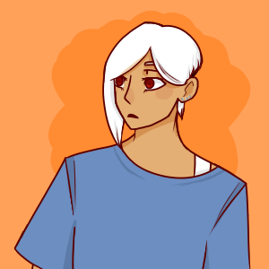

The Differences Between Us- Characters

Characters

Nathan Landvik
Pronouns: He/him
Birthday: July 16, 1994
Age (In Story): 18
About: The Edgelord. A hipster who says things for the sake of bragging and making himself "cooler." He's hot headed and adventurous, getting into trouble the majority of his life. His careless actions often lead him into the danger he oh-so desires.

Nadarie Aquaeli-Rey Lerafîané
Pronouns: He/him
Birthdate: XXXX
Age(in story): XXXX
About: Claims to be the "spawn of royalty" of another universe. It sounds ridiculous because he sounds and looks like a human. He appears to be overly amused and fascinated by everything humans do.

Briet Familiar
Pronouns: They/them
Birthdate: XXXX
Age(in story): XXXX
About: Very attached to Nadarie. They idolize him and their appearance is even similar to his, despite them not even being related. They speak with a monotone voice and stoic face. Any emotion that comes from them is only directed towards Nadarie, whom they address as "Sir."

Kinyea Ilimux
Pronouns: He/him
Birthdate: XXXX
Age(in story): 16(?)
About: He's a lanky teenage boy. Something about his appearance seems unhealthy, or unworldly. His skin is unnaturally dull and his teeth are sharp and pointed, the same with his nails. He's seems cowardice, and tails behind Nadarie, always refusing to speak unless spoken to. Despite this, it's not uncommon to see him scowl at random passerbys.